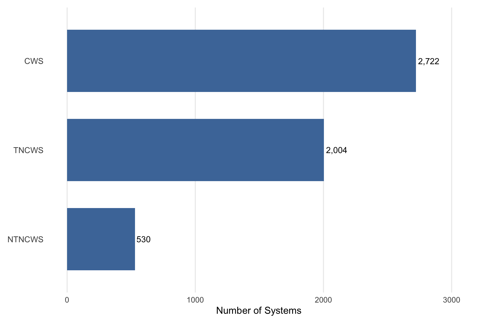
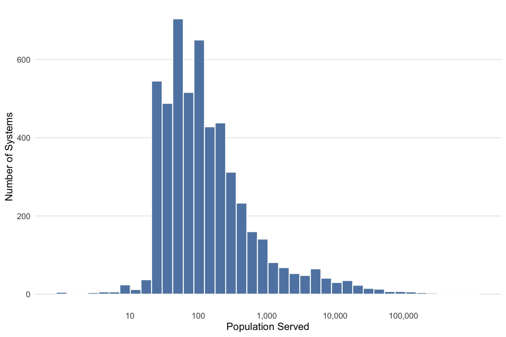
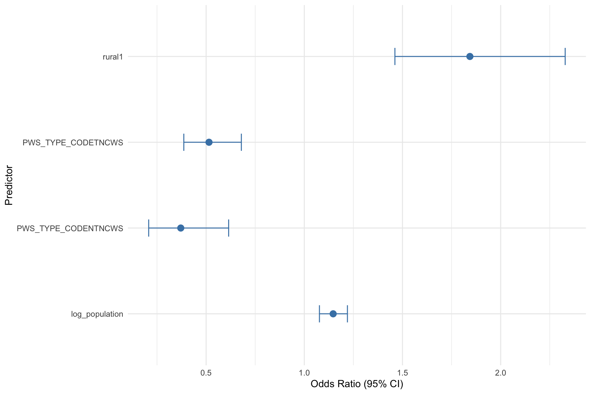

An Analysis of Rural-Urban Difference in Drinking Water System Violations in Georgia
1 Abstract
Access to safe drinking water is a critical public health priority, yet disparities in regulatory compliance persist across geographic regions in the United States. This study examined whether rural public water systems in Georgia are more likely to experience drinking water quality violations compared to urban systems. Data were obtained from the Environmental Protection Agency’s Safe Drinking Water Information System (SDWIS) and linked with Rural–Urban Commuting Area (RUCA) codes to classify systems as rural or urban. The study population included 5,256 public water systems across Georgia.
The primary outcome was the occurrence of at least one recorded drinking water violation per system. Multivariable logistic regression was used to estimate the association between rural status and violation occurrence, adjusting for system type and population served (log-transformed).
Overall, 8.5% of systems experienced at least one violation. Rural systems had significantly higher odds of violations compared to urban systems (OR = 1.84, 95% CI: 1.46–2.33). Larger systems were also associated with slightly increased odds of violations (OR = 1.15, 95% CI: 1.08–1.22), while non-community systems had lower odds relative to community water systems. Model performance was modest (AUC = 0.63), indicating limited ability to predict violations.
These findings suggest that rural water systems in Georgia face greater challenges in maintaining compliance with drinking water regulations. Targeted interventions addressing structural and resource constraints in rural systems may be necessary to reduce disparities and improve equitable access to safe drinking water.
2 Introduction
Access to safe drinking water is a fundamental public health priority in the United States of America (noauthor_drinking_water_2023?). Public water systems are regulated under the Safe Drinking Water Act to ensure compliance with health-based standards, however, disparities in water quality outcomes persist across geographic regions. Exposure to contaminted drinking water has been associated with a range of adverse health outcomes, including infectious disease and long-term chronic conditions(noauthor_drinking_nodate?).
Emerging evidence suggests that these disparities are not uniformly distributed, with certain populations experiencing a disproportionate burden of drinking water violations. Prior research has documented significant geographic and sociodemographic variation in violation patterns, with rural communities and smaller water systems often facing elevated risks of noncompliance (allaire_national_2018?; mcdonald_drinking_2018?). These disparities are thought to be driven by structural factors, including aging infrastructure, limited financial and technical capacity, reduced economies of scale, and challenges in regulatory oversight.
In Georgia, public water systems serve a diverse population across densely populated urban centers and sparsely populated rural areas. Rural systems, in particular, may face constraints that affect their ability to maintain consistent compliance with drinking water regulations. Despite national-level evidence of disparities, less is known about how these patterns manifest at the state level. Examining rural–urban differences in drinking water violations within Georgia is therefore critical for identifying vulnerable systems, informing targeted policy and regulatory interventions, and advancing efforts to ensure equitable access to safe drinking water.
2.1 Research Question
This analysis evaluated whether rural public water systems in Georgia are more likely to experience drinking water quality violations compared to urban water systems. The primary outcome of interest was the occurrence of at least one drinking water violation per system. The primary predictor was rural versus urban classification of the water system’s service area. Additional system-level factors, including population served and system type, are considered as potential confounders.
3 Methods
3.1 Computational Assistance
ChatGPT and Copilot were used to assist with troubleshooting coding errors and formatting ideas for cleaner tables. All code was reviewed by the author for clarity, understanding, and final decisions.
3.2 Data Source
The primary data source is the Safe Drinking Information System (SDWIS), maintained by the Environmental Protection Agency (EPA) (noauthor_sdwa_nodate?). SDWIS collected information from public water systems and state primacy agencies, including characteristics, populations served, ownership type, geographic location, and violation records. Two SDWIS datasets were used: one containing water information and the other documenting violation-level records. Rural-urban classification was assigned using the 2010 RUCA ZIP code dataset obtained from the University of Washington WWAMI Rural Health Research Center (noauthor_rural_nodate?).
3.3 Study Population
The study population consisted of public water systems located in Georgia. Systems were identified using the Safe Drinking Water Information System (SDWIS) database maintained by the Environmental Protection Agency. After restricting the data to systems located in Georgia, a total of 5,256 public water systems were included in the analysis. These systems were categorized by water system type, including community water systems, transient non-community water systems, and non-transient non-community water systems.
3.4 Outcome and Predictor Variable
Outcome: The primary outcome is whether a public water system in Georgia experienced at least one recorded drinking water quality violation.
Primary Predictor: The primary predictor is the rural versus urban classification of the water system’s service area. Rural–urban status was assigned using Rural–Urban Commuting Area (RUCA) ZIP code classifications.
•RUCA Codes ≥ 4 were defined as rural areas
•RUCA Codes 1-3 were defined as urbanCovariates: Additional covariates included water system type (community, transient non-community, or non-transient non-community) and the population served. Population served was log-transformed to account for the highly skewed distribution of system size.
3.5 Statistical Analysis
Descriptive statistics were used to summarize characteristics of the public water systems included in the study population. These summaries included counts of water systems by system type and distributional characteristics of the population served.
Exploratory data analysis was conducted to examine patterns in the distribution of drinking water violations and system characteristics. Visualizations were used to evaluate variation in system size and to explore potential differences between rural and urban systems.
To evaluate the association between rural status and the likelihood of experiencing a drinking water violation, a multivariable logistic regression model was fit. The model estimated the odds of experiencing at least one violation while adjusting for water system type and the log-transformed population served. Model results were summarized using odds ratios (OR) and corresponding 95% confidence intervals (CI).
3.6 Description of Data and Data Source
The primary data source for this project is the Safe Drinking Water Information System (SDWIS) maintained by the Environmental Protection Agency (EPA). SDWIS is a national database maintained by the EPA to monitor compliance with the Safe Drinking Water Act. The data were collected through reports submitted by public water systems and state primacy agencies, including detailed information on water system characteristics and drinking water violations.
Two primary SDWIS datasets were used: the first contains water system-level information including system identification numbers, system type, population served, geographic location, and ownership characteristics. The second dataset includes violation level records, documenting containment, violation type and dates.
4 Results
The dataset used for this analysis was restricted to public water systems located in Georgia (n = 5,256). The STATE_CODE variable confirms that all systems in the dataset correspond to Georgia
Exploratory data analysis was conducted to examine characteristics of public water systems in Georgia and to understand the distribution of key variables prior to statistical modeling. These analyses focused on system type, population served, and the distribution of drinking water violations across systems.
Footnote. CWS = Community Water System; NTNCWS = Non-Transient Non-Community Water System; TNCWS = Transient Non-Community Water System.
The distribution of population served varied widely across water systems. Approximately 25% of systems served fewer than 49 individuals, while 75% served fewer than 262 individuals, indicating that many systems in Georgia serve relatively small populations.

| Violation_Count | Number_of_Systems |
|---|---|
| 1 | 210 |
| 2 | 60 |
| 3 | 39 |
| 4 | 16 |
| 5 | 4 |
| 6 | 6 |
| 7 | 6 |
| 8 | 3 |
| 9 | 2 |
| 12 | 17 |
| 13 | 4 |
| 14 | 6 |
| 15 | 2 |
| 16 | 1 |
| 20 | 1 |
| 24 | 5 |
| 36 | 1 |
| 48 | 1 |
| 60 | 1 |
| 71 | 1 |
The majority of public water systems had no recorded drinking water violations. However, a smaller subset of systems experienced one or more violations, indicating that violations were relatively uncommon overall but still present across multiple systems.
4.1 Inferential Analysis
Moving forward to formally evaluate whether rural public water systems in Georgia are more likely to experience drinking water violations compared to urban systems, a multivariable logistic regression model was fit. The outcome of interest was whether a system experienced at least one violation. The primary predictor of interest was rural versus urban classification. The model additionally adjusted for population served and water system type to account for potential confounding.
4.2 Creating System-Level Violation Counts
System-level violation counts were calculated. Among Georgia public water systems, 8.5% had at least one recorded violation, while 91.5% had none.
4.3 Merging Rural-Urban Classification
Rural-urban classification was assigned using Rural-Urban Commuting Area (RUCA) codes. RUCA codes 1-3 represent urban areas, while codes ≥4 represent rural areas. ZIP codes without a matching RUCA classification were treated as missing.
4.4 Distribution of Rural and Urban Systems
| Rural_Status | Number of Systems |
|---|---|
| Missing | 1417 |
| Rural | 1653 |
| Urban | 2186 |
Systems with missing RUCA classification were excluded from subsequent analyses. After exclusion, the final analytical sample included 3,389 public water systems, of which 1,653 were classfifie as rural and 2,186 as urban.
4.5 Creation and Preparation of Variables
Systems with missing RUCA classification were excluded from subsequent analyses. After exclusions, the final analytic sample included 3,839 public water systems, of which, 1,653 were classified as rural and 2,186 as urban.
A binary outcome variable was created to indicate whether a systes experienced at least one drinking water violation (1 = yes, 0 = no).
Population served was log-transformed due to right-skewness. Rural status, outcome, and water system type were treated as categorical variables for regression analysis.
4.6 Logistic Regression
Results from the multivariable logistic regression indicated that rural public water systems had higher odds of experiencing at least one drinking water violation compared with urban systems (OR = 1.84, 95% CI: 1.46–2.33). Larger systems also had slightly higher odds of violations, with an odds ratio of 1.15 per unit increase in log-transformed population served (95% CI: 1.08–1.22).
Compared with community water systems, non-transient non-community water systems had substantially lower odds of violations (OR = 0.37, 95% CI: 0.21–0.61), and transient non-community water systems also had lower odds (OR = 0.51, 95% CI: 0.39–0.68). Overall, these results suggest that rural systems may face greater challenges in maintaining drinking water compliance, even after accounting for system size and system type.
| Predictor | OR | 95% CI Lower | 95% CI Upper | p-value |
|---|---|---|---|---|
| rural1 | 1.84 | 1.46 | 2.33 | 3.00e-07 |
| log_population | 1.15 | 1.08 | 1.22 | 1.50e-05 |
| PWS_TYPE_CODENTNCWS | 0.37 | 0.21 | 0.61 | 3.11e-04 |
| PWS_TYPE_CODETNCWS | 0.51 | 0.39 | 0.68 | 3.90e-06 |

Figure 3 displays odds ratios and 95% confidence intervals from the multivariable logistic regression, showing associations between rural status, population served, water system type, and violation likelihood.
4.7 Model Performance Section
The logistic regression model was evaluated using a 70/30 train-test split to assess its performance on unseen data. On the held-out test dataset, the model achieved a classification accuracy of 0.914. However, this high level of accuracy is largely driven by class imbalance in the outcome, as approximately 91.5% of public water systems in the dataset did not experience any drinking water violations. As a result, overall accuracy primarily reflects correct classification of the majority class rather than strong predictive performance for identifying systems that experience violations.
[1] 0.914[1] 0.633To better assess the model’s ability to distinguish between systems with and without drinking water violations, the area under the receiver operating characteristic curve (AUC) was calculated. The model achieved an AUC of 0.633, indicating modest discriminatory ability. While this performance is better than random classification, it suggests limited effectiveness in separating systems that experience violations from those that do not. Overall, the results indicate that the model captures some signal associated with violation risk, but predictive performance is constrained, likely due to unmeasured factors influencing drinking water violations.
4.8 Calibration and Confusion Matrix Assessment
To further evaluate model performance, a confusion matrix was examined at a fixed classification threshold of 0.5 to assess sensitivity and specificity. Given the strong class imbalance in the outcome, additional emphasis was placed on the model’s ability to correctly identify systems experiencing at least one violation (sensitivity), rather than overall accuracy alone. The results indicate that while the model performs well in identifying non-violation cases, its sensitivity for detecting violation-prone systems is comparatively lower, consistent with the moderate AUC observed.
Actual
Predicted 0 1
0 1046 98
1 0 0[1] 0[1] 1The model demonstrated higher specificity than sensitivity, indicating stronger performance in identifying systems without violations compared to those experiencing violations. This pattern is expected given the imbalance in the outcome distribution and suggests that additional predictors or modeling strategies may be needed to improve detection of high-risk systems.
5 Discussion
The analysis found that rural public water systems in Georgia had greater odds of experiencing drinking water violations compared to urban systems, even after adjusting for system size and water system type. These findings are consistent with prior research suggesting rural systems face structural challenges that may limit their ability to maintain regulatory compliance. Smaller tax bases, aging infrastructure, and limited capacity may contribute to these disparities, placing rural communities at increased risk of exposure to unsafe drinking water.
In addition to rural-uran differences, system-level characteristics also have an important role. Larger systems demonstrated higher odds of violations, which may reflect increase regulatory scrutiny or more complex operational demands. Conversely, non-community water systems exhibited lower odds of violations compared to community systems, potentially due to differences in regulatoray requirements or patterns of water use.
Despite identifying significant associations, the predictive performance of the models was modest, with an AUC of 0.63. This suggests that while rural status and system characteristics contribute to violation risk, additional unmeasured factors such as funding availability, infrastructure age, or management capacity likely influence compliance outcomes. The model’s lower sensitivity further indicates limited ability to identify systems at highest risk for violations.
Several limitations should be considered. First, the use of the administrative data may introduce measurement error or inconsistencies in reporting violations. Second, rural classification based on ZIP code-level RUCA codes may not fully capture variation within service areas. Third, systems with missing RUCA classifications were excluded, which may affect generalizability. Finally, the cross-sectional nature of the analysis limits causal interpretation.
Overall, these findings highlight persistent rural–urban disparities in drinking water system compliance in Georgia. Targeted policy and resource allocation strategies aimed at supporting rural water systems may be necessary to reduce these inequities and ensure equitable access to safe drinking water. Future research should explore additional system-level and contextual factors to better understand drivers of violation risk and improve predictive modeling efforts.